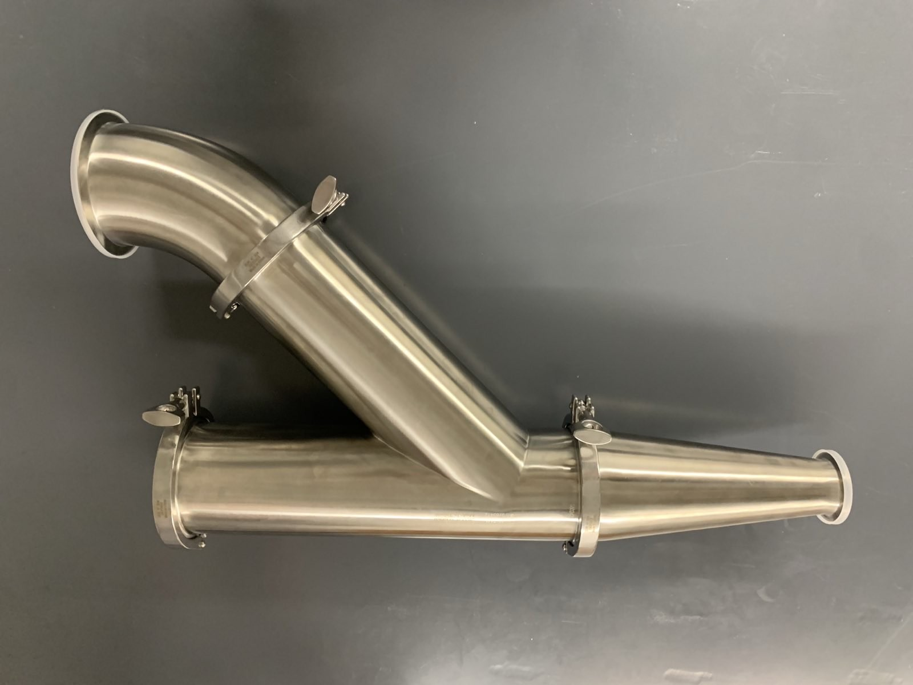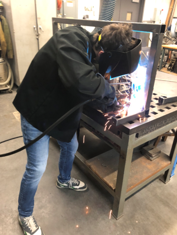
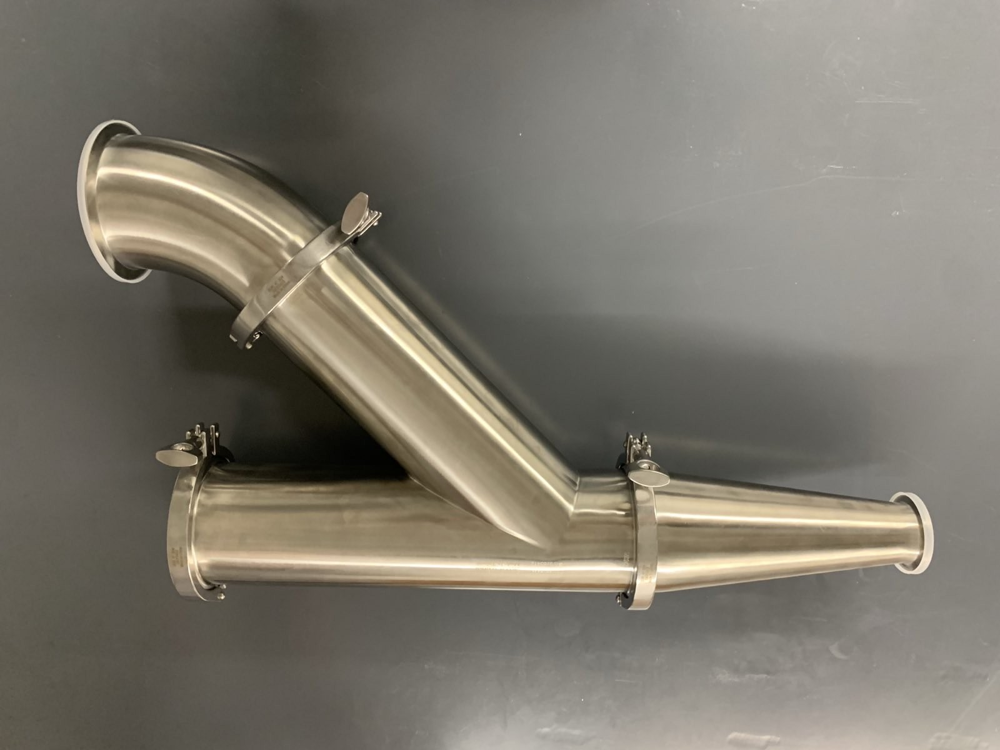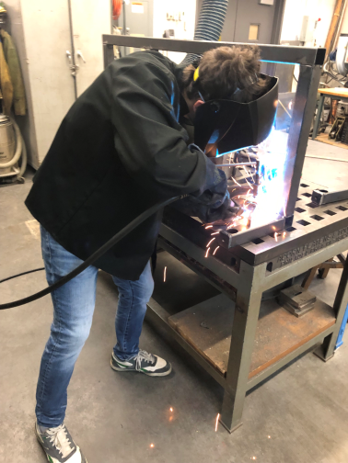
For our final-year capstone project, my group was tasked with redesigning a pneumatic impacting apparatus for the McMaster Injury Biomechanics Laboratory. The device is an important piece of equipment in their lab, used to simulate various types of impact injuries (a hockey puck hitting a helmet, a projectile hitting a human bone). It is made up of two components: the impactor and the specimen chamber. The impactor is essentially a heavy duty potato gun that is used to accelerate the projectile. The existing device could accomodate two acceleration tubes (three-inch and four-inch diameters), and the tubes are meant to move laterally to provide more flexibility in positioning the impact location. The specimen chamber houses the object that is being tested and contains the impact.
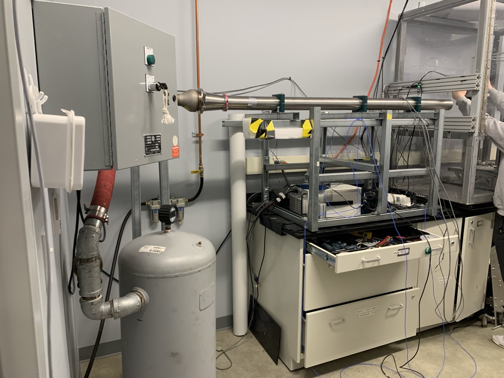The original pneumatic impactor set-up.
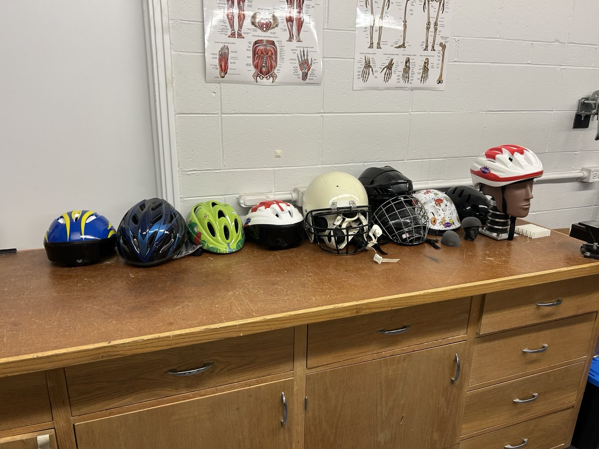Various helmets that have been used in experiments at the MIBL.
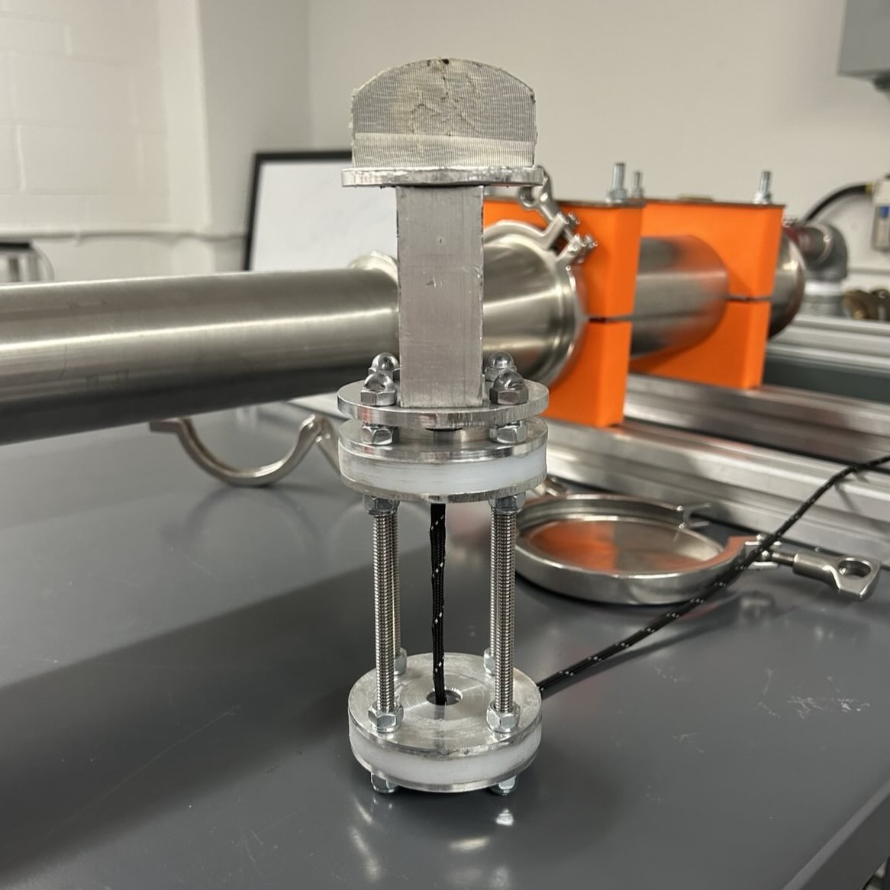A three-inch projectile. Metal plates can be added to the bottom portion to increase the total mass, and the hockey puck at the head of the device can be replaced with other impact geometries. The parachord leash is used to return the projectile to its starting position.
The existing apparatus was functional but deficient in many areas. To determine exactly what needed to be fixed, we sat down with the director of the lab (our project supervisor) and several of her grad students who use the impactor. That conversation allowed us to make a list of issues with the current apparatus that we had to solve:
We got to work designing, proposing, and redesigning. After several months of iterating we had a solution that addressed each of the previously outlined concerns. The new apparatus would be a combination of existing pieces, machined parts, and off-the-shelf components. For our design, we lowered the acceleration tube to table height, and we designed a custom steel structure to support the specimen chamber. We also designed an adjustable clamp system to fasten the tube to the table. The clamps would be compatible with the existing three-inch and four-inch tubes, as well as with a new two-inch tube. To solve the projectile rotation issue, we customized the new tube with an internal keyway (made from aluminum extrusion), and a corresponding projectile was designed. A wye-fitting allowed us to separate the compressed air intake from the projectile loading port. We also designed a platform to extend the length of the table.
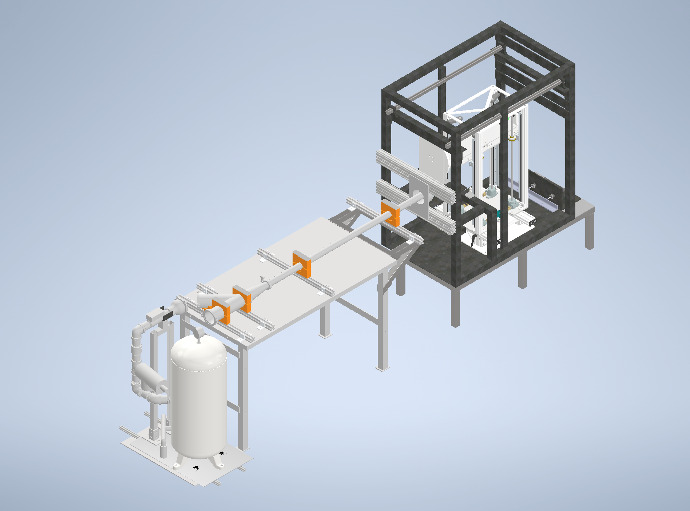Our proposed impactor redesign.
We presented our design to our supervisor, and after some slight tweaks we began manufacturing. We built the specimen chamber support out of two-inch square steel tube, which we ordered to size and then welded ourselves. We also painted the structure with a rust-proof coating. The floor of the new lab space was uneven, so we designed the entire structure with adjustable leveling feet that anchored to the concrete floor.
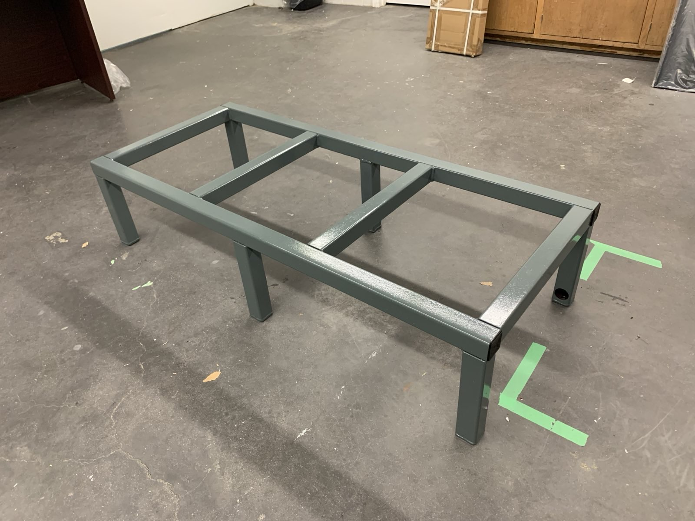The specimen chamber support structure.
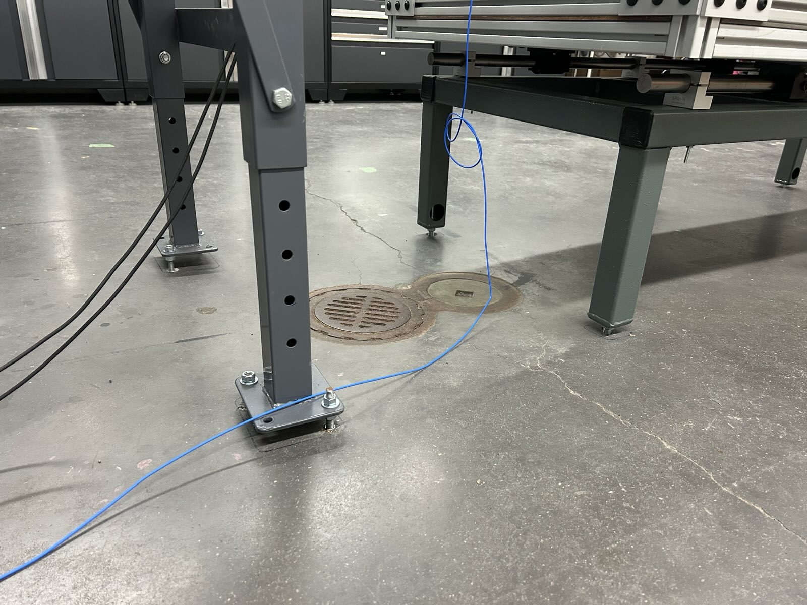Adjustable feet on the specimen chamber structure and the acceleration tube table.
The adjustable tube clamp system was made of custom 3D-printed clamps that slide along a length of aluminum extrusion. The inner diameter of the clamps is four inches, and inserts can be used to reduce the diameter to accomodate the smaller tubes. The clamp components were printed nearly solid, and we manufactured steel retainers to hold everything in place. We also engraved the aluminum extrusions with a ruler, making it much easier to position the tube.
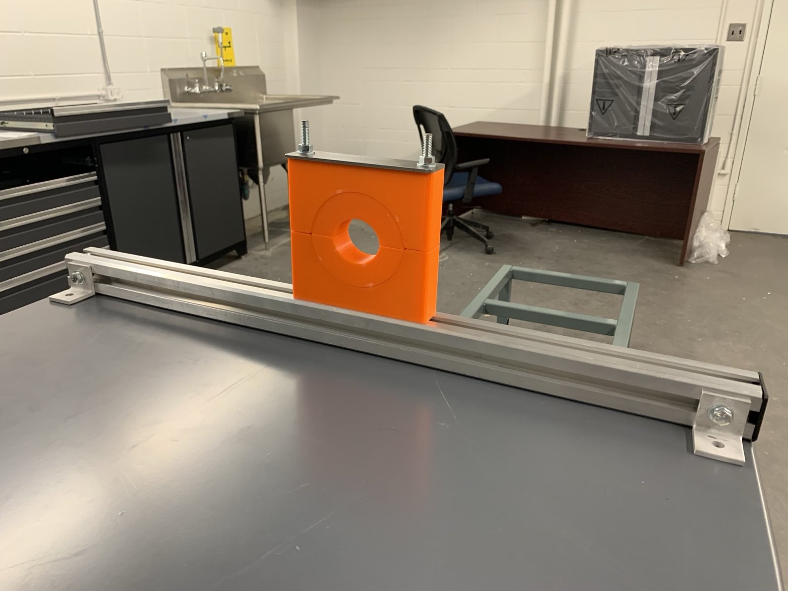The adjustable modular tube clamp system with the two-inch diameter inserts installed.
The clamps were mounted to a table that we managed to acquire from another lab that was in the process of downsizing. I had to wheel the table across campus to get it to the new lab space.
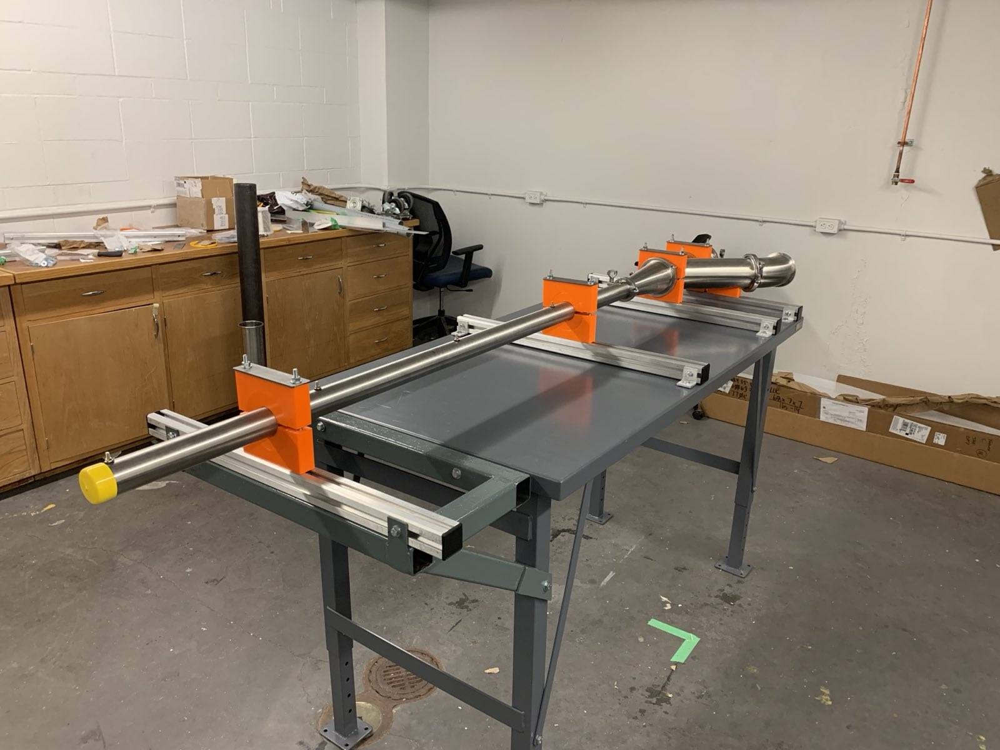The new two-inch tube installed in the clamp system.
One of the more interesting parts of the new design was the two-inch tube modified to restrict projectile rotation, which we referred to as the "keyed tube". We accomplished this by installing a 10mm wide aluminum extrusion on the inside of the tube. To install the extrusion we needed to drill holes along the length of the tube, which we did using a milling machine to ensure the holes were perfectly aligned. We installed the extrusion using rubber washers to prevent any air leakage. A new projectile was designed with a corresponding cross-section, which would ride along the extrusion.
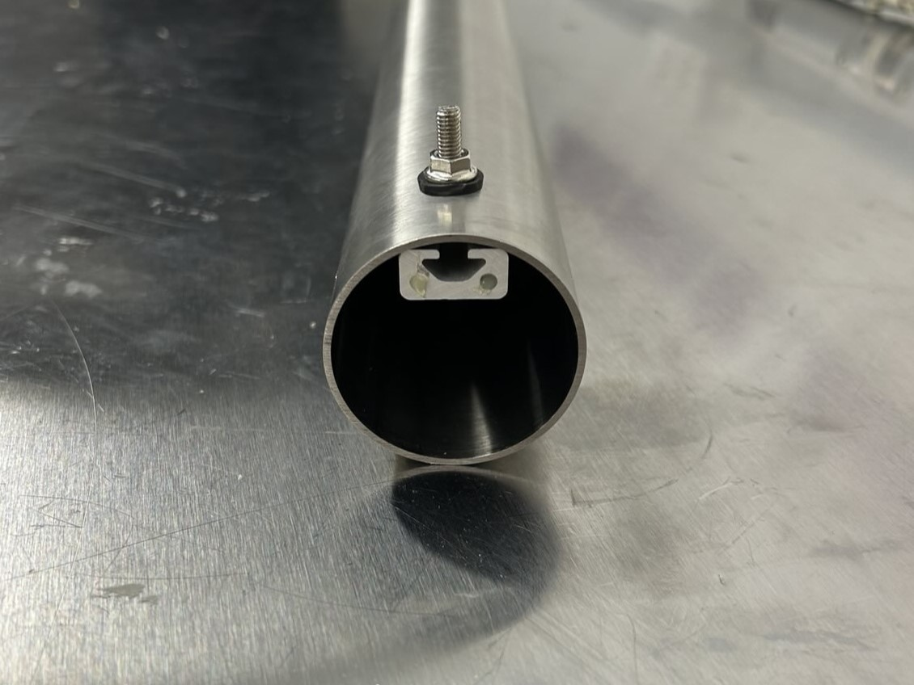The two-inch tube with internal aluminum extrusion.
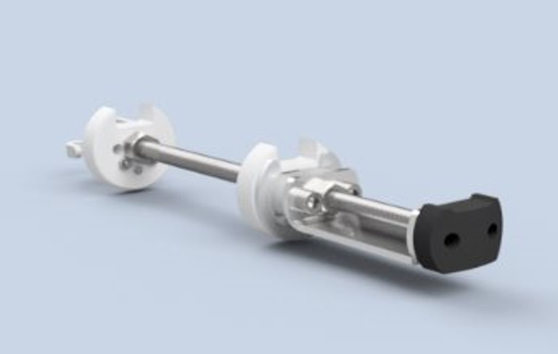The two-inch projectile with keyway and removable hockey puck head.
The original plan was for our team to move the compressed air tank and specimen chamber to the new lab, and hand over a fully tested device that was ready to use. Unfortunately, due to conflicts with ongoing research projects, we were unable to move the apparatus before the end of the school year. The impactor was relocated the following year and has since been tested and approved for use by the department health and safety team, and is now being used for graduate level research.
The fully assembled impactor.
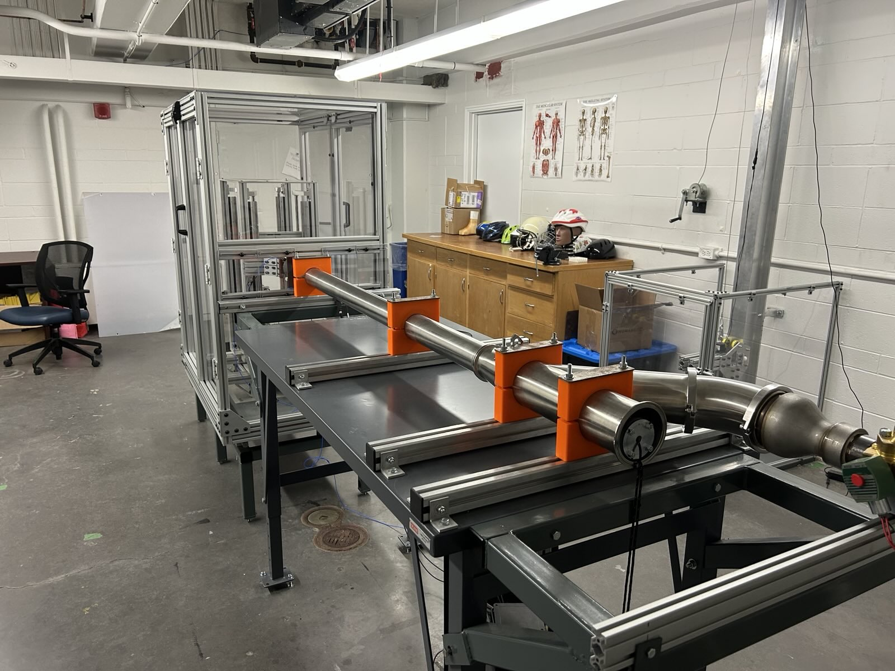Another view of the fully assembled impactor.
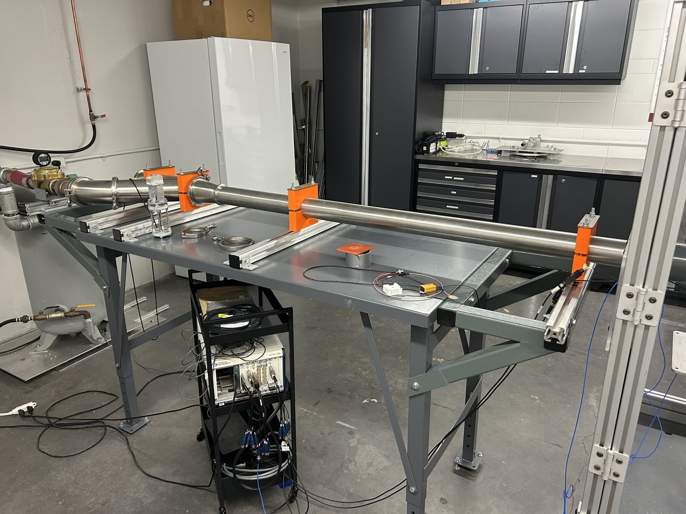A closer view of the fully assembled acceleration tube.
This was a group project, with each member playing a different role and contributing different elements to the final design. My roles and contributions were:
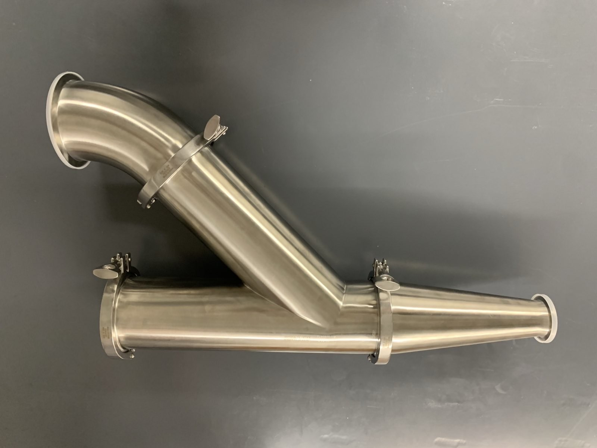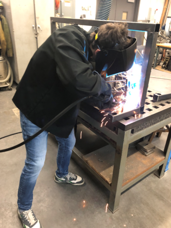